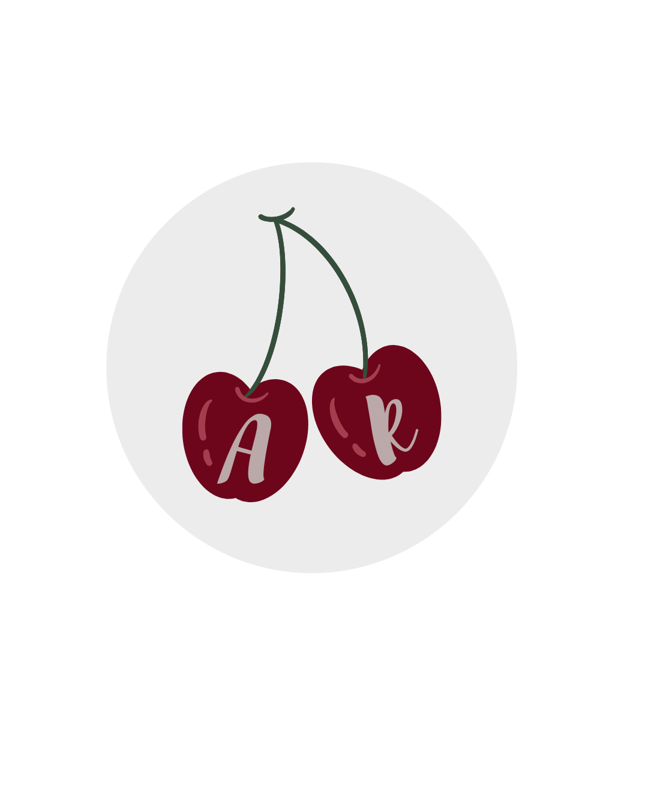
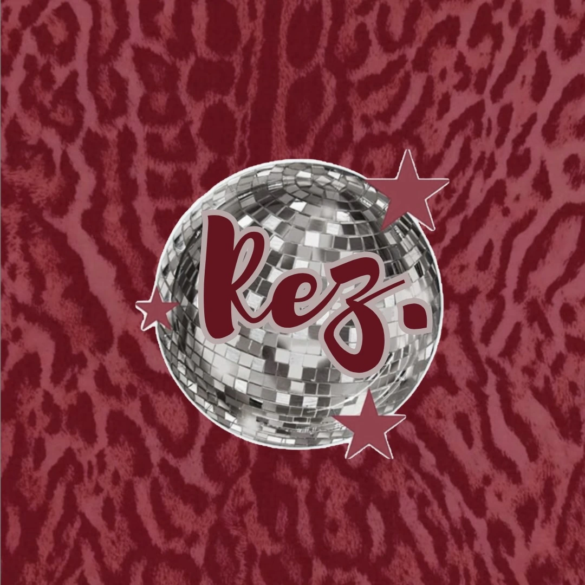
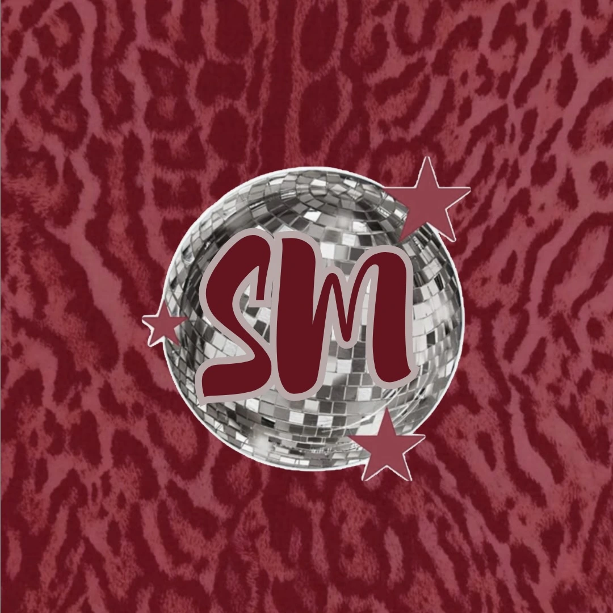

Home
About
Contact
Alayna Rund | Social Media
9
posts
20
followers
26
posts
Digital Marketing & Social Media Professional.
MWMO Client Project
Johnny Pops Event

Storytelling

Digital Design
UST Halloween Post
Photography
Dining Services March Madness

Analytics Report
Paid Social
×
Case Study